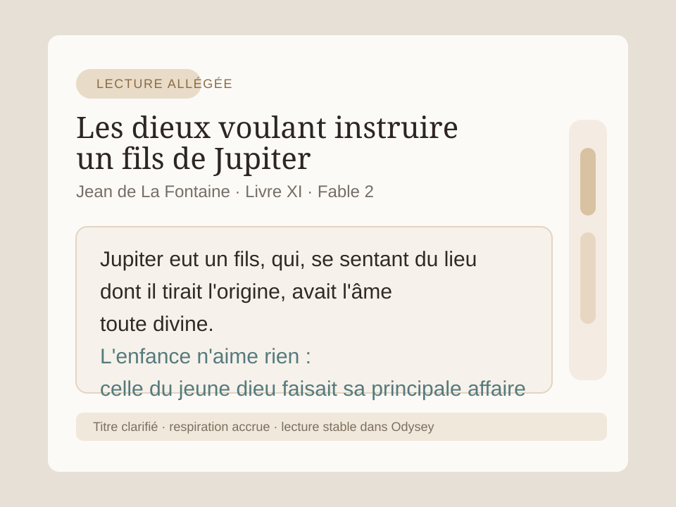

Parcours
Ludovic Belhomme
- Professeur de physique-chimie au collège
- Ancien parcours de thèse en chimie
- Expériences croisées en biologie
- Intérêt ancien pour les réseaux et les télécommunications
Lecture adaptée des PDF pour élèves, familles et professionnels.
Accès en ligneEdition Odysey
Odysey reprend les documents PDF trop denses, les reconstruit avec mesure, puis restitue une lecture adaptée aux troubles dys sans transformer le texte en interface.
A l'origine
Je suis actuellement professeur de physique-chimie au collège. Avant cela, j’ai mené une thèse en chimie, avec un parcours qui m’a aussi amené vers la biologie, les réseaux informatiques et les télécommunications.
En travaillant au collège, je me suis confronté à une question très simple : comment rendre les PDF et les photocopies plus accessibles aux élèves qui peinent à lire, à suivre la ligne, à décoder ou à rester engagés dans un document dense.
Odysey est né de cette recherche. Le projet est récent, encore en construction, et certains problèmes peuvent persister selon les documents, l’OCR ou la plateforme. Les retours d’usage me sont donc particulièrement précieux.
Parcours
Position
Odysey ne cherche pas à faire spectacle. L’objectif est de laisser le document respirer, de clarifier sa structure et de libérer de la charge cognitive là où elle entrave la compréhension.
Expertise
Chaque module a une fonction simple : mieux lire, mieux suivre, mieux comprendre, sans ajouter de complexité à la page.
Odysey reconstitue le texte en une lecture continue, nettoie les en-têtes répétés et rétablit une structure exploitable.
Un profil normal, des profils dys, un mode audio/focus, puis des variantes avancées quand le besoin l’exige vraiment.
Les PDF sans couche texte peuvent retrouver une lecture exploitable directement dans l’application, sans dépendre d’un service externe.
Lecture à voix haute, point de reprise, paragraphe choisi, réglette de lecture et mise en évidence du passage courant.
Les expressions sont normalisées, espacées, colorées avec mesure et verbalisées pour une lecture plus stable.
Une sortie PDF adaptée reste disponible pour l’école, la maison, l’accompagnement orthophonique ou le contexte professionnel.
Exemple
La page brute garde ses repères éditoriaux, sa densité et ses contraintes. Dans Odysey, le texte est réorganisé, aéré et restitué dans une lecture plus nette, plus continue et plus disponible.

Profils
Lecture reflow sans aide supplémentaire.
Composition aérée, stable et sobre pour les textes longs.
Appui mesuré au décodage sans surcharge graphique.
Syllabes, repères et guidage visuel plus affirmés.
Lecture vocale, repère visuel et point de reprise réunis.
Windows
Pour un usage classique sur poste fixe ou portable, avec raccourcis et installation guidée.
Télécharger l’exeWindows
Une archive à décompresser, puis lancer directement pour un essai rapide.
Télécharger le zipWeb / PWA
Utilisable depuis le navigateur, installable ensuite, avec les profils, la lecture, l’audio et l’OCR local côté navigateur.
Ouvrir l’application webContact & soutien
Odysey progresse document après document. Si tu rencontres un problème, si un PDF passe mal, si une idée manque ou si un retour d’usage peut aider, je serai heureux de le recevoir.
Contact : ludovic.belhomme@outlook.com